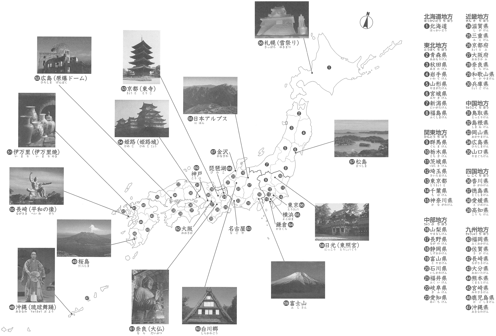

巻末 - Map of Japan
Here you can view the map of Japan and test your knowledge of it by taking short quizzes for each region.
日本地図
Take a good look at the map below or click it to get a better view. Once you feel you have a good grasp of Japan's locations, you can put that knowledge to the test by clicking the button below to start a quiz.

(Click Map to See Full Size)